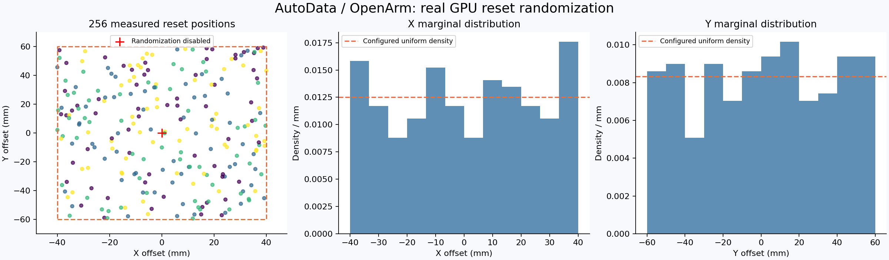
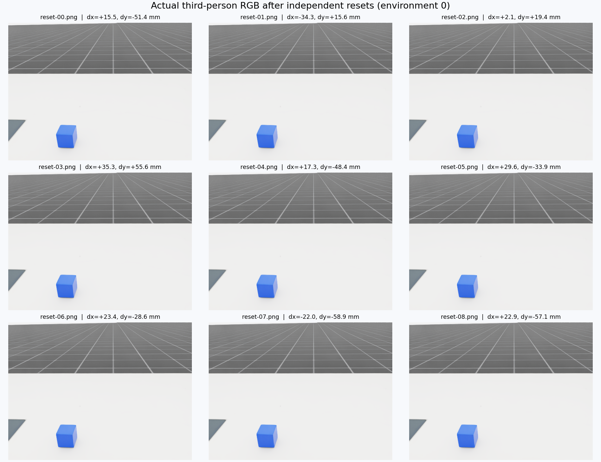

2026-10-16 · RTX 5090 · OpenArm 左臂 · 4 环境 · 256 次位姿采样 · passed
启用物体 XY 位置随机化：X ±40 mm，Y ±60 mm。高度、朝向及外观参数保持固定。
| 位姿数值有限 | 通过 |
| XY 均在配置范围内 | 通过 |
| XY 实际发生变化 | 通过 |
| 高度保持固定 | 通过 |
| 朝向保持固定 | 通过 |
| 相同种子复现 | 通过 |
| 不同种子产生不同样本 | 通过 |
| 关闭随机化后位置固定 | 通过 |
| 12 步物理运行数值有限 | 通过 |

虚线为配置边界和均匀分布参考；未进行均匀性显著性检验。

图中为环境 0 的第三人称相机，标签是对应物理状态的偏移。
范围：reset 随机化、种子复现、12 步物理与 RGB 渲染。未评估轨迹生成成功率、训练收益或泛化。